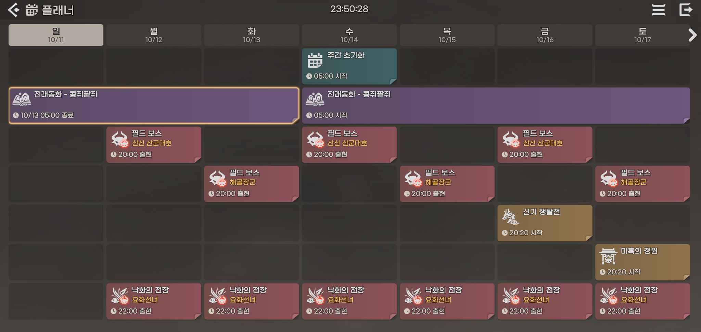

PARTY CONTROL ROOM
문파 일정 관리
관리자 로그인 후 스크린샷과 요일별 일정을 변경할 수 있습니다.
🔐 관리자 로그인
🛠️ 일정 편집
주간 플래너 스크린샷

요일별 콘텐츠
한 줄이 한 콘텐츠입니다. 반복 요일에 체크하세요. 이미지 속 '20:00 출현' 등의 시간을 직접 입력할 수 있습니다.
Firebase 연결 상태 확인 중...
관리자 로그인 후 스크린샷과 요일별 일정을 변경할 수 있습니다.

한 줄이 한 콘텐츠입니다. 반복 요일에 체크하세요. 이미지 속 '20:00 출현' 등의 시간을 직접 입력할 수 있습니다.